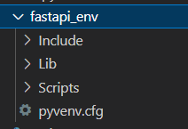
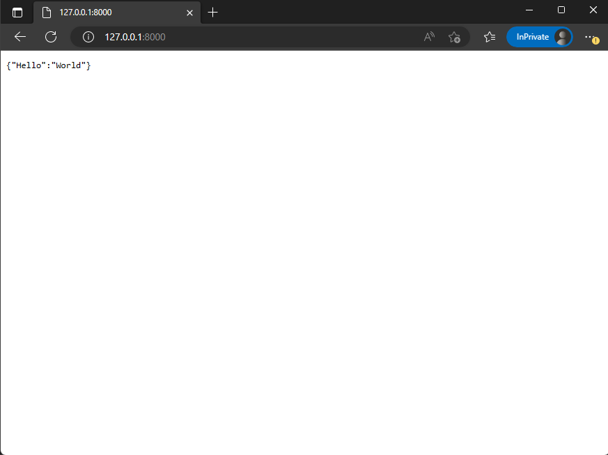
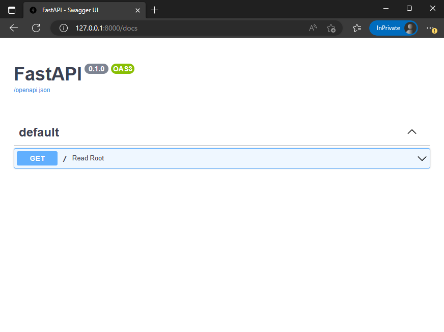
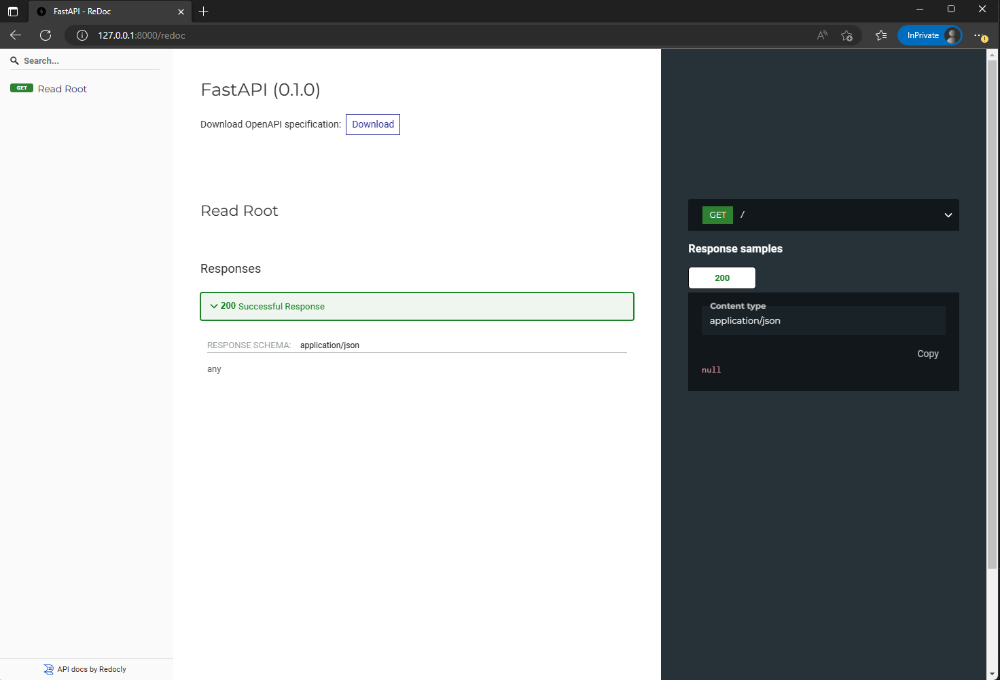

FastAPI Series 02 >> Getting Started With FastAPI: Building Your First API
Table of Contents
In this tutorial, we guide you through the process of building your first API using FastAPI, covering steps like setting up your environment, creating a simple FastAPI application, running and testing the application, and exploring FastAPI’s powerful automatic documentation features. Get ready to take your first step towards mastering this powerful web development framework!

Introduction
Now that you’ve been introduced to FastAPI and its benefits in modern web development💻, it’s time to get your hands dirty and build your first API using this powerful framework. In this tutorial, we’ll guide you step-by-step through the process of creating a simple API using FastAPI, from setting up your environment to defining endpoints and testing the API.
Section 1: Setting Up Your Environment
To get started with FastAPI, you’ll need to have Python 3.7 or higher installed on your machine. Then, follow these steps to set up your environment:
1. Create a virtual environment:
python -m venv fastapi_env
A folder named fastapi_env will be created.

2. Activate the virtual environment:
- Windows: fastapi_env\Scripts\activate
- macOS/Linux: source fastapi_env/bin/activate
3. Install FastAPI and Uvicorn (an ASGI server):
pip install fastapi uvicorn
Section 2: Creating Your First FastAPI Application
With your environment set up, it’s time to create a simple FastAPI application. Follow these steps:
-
Create a new Python file called main.py in your project directory.
-
Import FastAPI and instantiate the application:
from fastapi import FastAPI
app = FastAPI()
- Define a route for the root endpoint:
@app.get("/")
async def read_root():
return {"Hello": "World"}
- Save the main.py file.
Section 3: Running and Testing Your FastAPI Application
To run your FastAPI application, execute the following command in your terminal:
uvicorn main:app --reload
This command starts the Uvicorn server and listens for requests on http://127.0.0.1:8000/.
To test your API, open your browser and navigate to http://127.0.0.1:8000/. You should see the JSON response {“Hello”: “World”}.

Section 4: Exploring FastAPI’s Automatic Documentation
One of FastAPI’s powerful features is its automatic documentation generation. To access the interactive Swagger UI documentation, open your browser and navigate to http://127.0.0.1:8000/docs. You can explore your API’s endpoints, try out requests, and even view the JSON schema for your API.

For an alternative documentation style, visit http://127.0.0.1:8000/redoc.

Conclusion:
Congratulations! 🎉㊗️🎊 You’ve successfully built your first API using FastAPI.
By setting up your environment 💻, creating a simple FastAPI application 📱, and testing it using the automatically generated 🗎, you’ve taken your first step towards mastering this powerful framework.
In our upcoming blog posts, we’ll explore more advanced features of FastAPI, such as routing, endpoint design, and database integration, to help you build even more sophisticated web applications. Stay tuned!